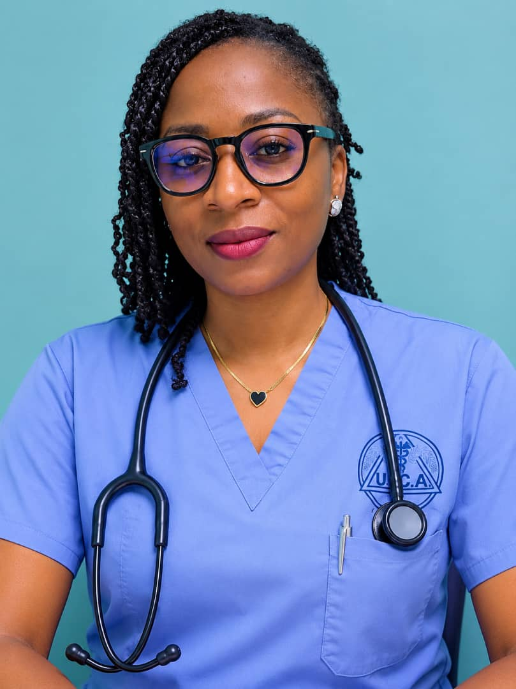
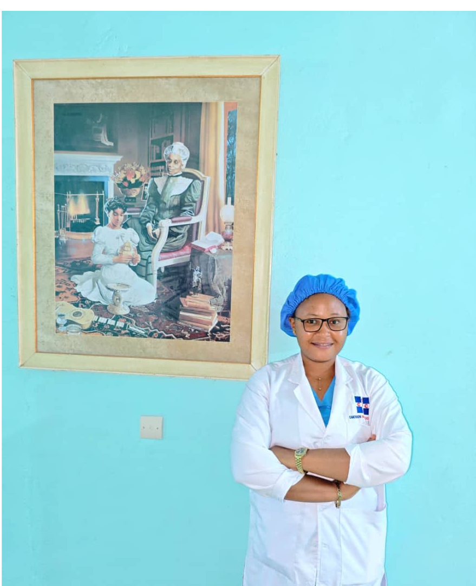
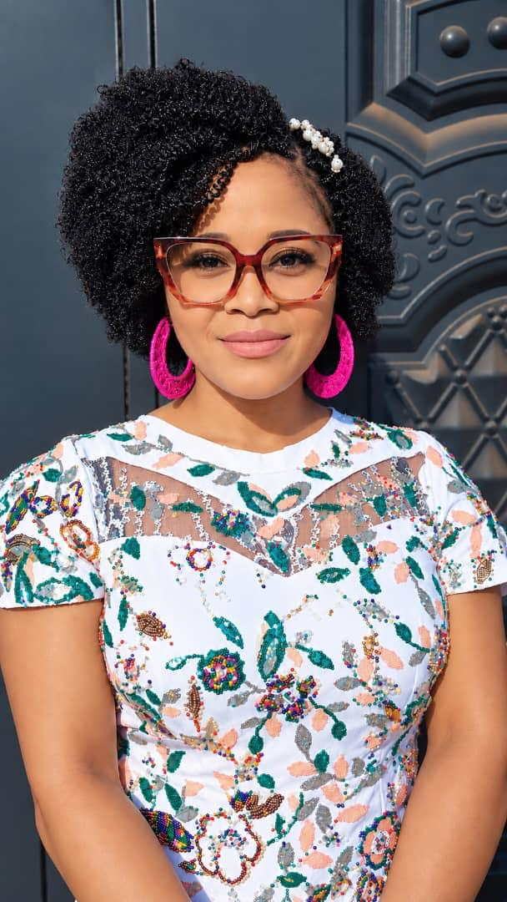

Advanced care. Compassionate people. A healthier tomorrow.
Comprehensive cancer prevention, diagnosis, treatment, supportive care, research and professional training from our main campus in Bekoko-Dibombari.





High-precision linear accelerators for external-beam radiotherapy.
Hybrid imaging for nuclear medicine and molecular diagnostics.
Dedicated CT simulation for precise radiotherapy planning.
We care for every patient with dignity and respect.
We strive for the highest standards in all we do.
We are honest, transparent and accountable.
We achieve more together.
We embrace new ideas and technology.
We are committed to making cancer care available to all.
View the official Ministry correspondence recognizing COC as a centre/pôle of excellence in oncology.
Read Official LetterThe IMRT phantom report and radiation output quality-check report supporting COC's radiotherapy quality program.
View Full ReportsTele-oncology collaboration supports complex case review and clinical decision-making.
 Prof. Waleed Mourad
Prof. Waleed Mourad Prof. Edmund Folefac
Prof. Edmund Folefac
Institutional leadership, strategy, research and development of comprehensive cancer care in Cameroon.

Clinical governance, radiation oncology leadership and multidisciplinary cancer care.
Leads systemic cancer treatment and the Medical Oncology service.

Administrative and operational management of the Center.
COC's main campus also supports education, professional training, scientific research and community cancer awareness and screening.

Our team can help you connect with the right COC service.